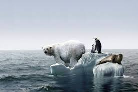
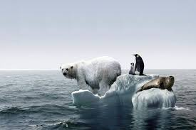

What exactly is global warming and why is it worthy of consideration? Global warming is the scientific phenomenon linking an increase of the average earth temperature because of a trapping of radiation within the earth like a greenhouse. This has been a natural phenomenon throughout the natural history of the world but it has only become a problem in the last few hundred years because of an anthropogenic increase in greenhouse gasses.
Global warming is caused by an acute heating of the earth’s atmosphere as a result of energy being trapped. Greenhouse gasses such as carbon dioxide and methane can cause the atmosphere to build up, leading to solar radiation becoming trapped within the earth like within a greenhouse, hence the name. Over time, the trapping of this radiation leads to the earth’s atmosphere rising in temperature and the earth becomes warmer as a result. The causes of global warming are both natural and anthropogenic but the anthropogenic influence is the most damaging. The phenomenon of global warming has been occurring naturally as a result of the natural rotation of the sun which changes the intensity of solar radiation hitting the earth, also natural processes such as volcanoes produce a large amount of Sulphur dioxide and other greenhouse gasses which can result in global warming too. Once these greenhouse gasses become released, they can contribute to the buildup of the atmosphere and work to trap more solar radiation within the earth. Global warming is also largely a result of the release of methane from cracks in the earth, landfill sites and through natural gas leaks. Methane has an effect on the atmosphere which is four times as bad for global warming as carbon dioxide. Cattle and other animals that produce methane can also contribute significantly to global warming, much of this has been a problem because of human animal farming which produces hundreds of cattle for the meat industry.

The reason as to why global warming is such an issue today is because of the problem that humans are creating with anthropogenic contributions to greenhouse gasses. Many of the practices that humans employ create enormous amounts of greenhouse gasses to be released and this has been well documented to be significantly harming the earth. Modernity, modern technology and new lifestyles have resulted in human activities that produce a lot of greenhouse gasses such as deforestation, the combustion of fossil fuels, industrial action and farming animals. The growing rise of industry around the world and the rise of consumerism has resulted in the production of many goods, all using fossil fuels either directly or indirectly. Consider the example of something trivial a mobile phone – creating something like this will lead to a large amount of components that need to be made using fossil fuels. Even if we want goods that have been grown on trees in our homes, they will need to be transported somewhere by transport that uses fossil fuels. There’s no real escape from it – fossil fuels are in the fabric of modern life. Mining causes methane and natural gas to escape from where it is trapped below the earth. Shockingly, many energy companies around the world that drill for new fossil fuels such as oil can actually end up burning all the natural gas off in the process rather than storing it because it is not economically viable to do so. This creates huge problems as there is a limited supply of natural gas and fossil fuels around the world. Deforestation is one of the biggest causes of global warming. Not only are trees cut down to make goods that need to be transported using fossil fuels, the removal of trees leads to a net loss of photosynthesis which is carried out by plants to make food. In this process, carbon dioxide can be absorbed and turned into oxygen, making food for the plants and cleaning the atmosphere as a result. The wide scale removal of trees and biodiverse life results in a large amount of carbon dioxide that can’t be converted to oxygen and so a huge problem for global warming.

 

Global warming and greenhouse gasses are problematic as they raise the earth’s temperature, but exact effects of global warming exist and what effect will global warming have for our planet and our society in the future? Polar ice caps can melt, there will be widespread flooding all over the world, there will be an increase in the frequency and intensity of harmful natural disasters and the consequences to the economy will be detrimental to societal progress. The melting of polar ice caps poses one of the biggest problems for human society. As the earth’s temperature increases, these large masses of ice and snow will melt and create the sea level to rise all over the world. In the same way, glaciers will also melt and create problems on land. According to scientific research, if all the snow and ice were to melt today, this would result in a raised sea level of over 200 feet worldwide and would be instantly detrimental to many low lying areas such as the Netherlands and other low lying islands around the world. It is the tragic case that most of the countries and areas that will be affected directly are often the ones that contribute the least to global warming. As global warming occurs, biodiversity all over the world will suffer. Species will die off as they won’t be able to adapt to their changing environments and the migratory patterns of many species will be ruined, e.g. birds will get lost migrating to get food. Food sources will be compromised, e.g. most primates are at significant risk as global warming results in less nutritious plant content to eat and a reduction in animal niches. Natural disasters such as hurricanes will be of greater occurrence and this will cause an increase in the economic effects. Hurricane damage alone will result in billions of dollars worldwide needing to be spent to rebuild societies and provide relief. It will be difficult for people and societies to keep up and offer enough support if global warming is too big of a problem. All natural disasters from tornadoes to droughts will all increase in intensity – one can only imagine what a hurricane twice as strong would do!

As a society, there are certainly many solutions to prevent global warming and reduce its harmful effects, yet it will be difficult to coordinate these efforts together. It could be a lot easier to live for many more years if we were to stop burning so many fossil fuels, yet the problem is the incentive for people to change their ways and adopt new practices, especially in the light of global capitalism and consumerism. Any global warming essay ought to shed some light on the solutions we can achieve. There are small choices that we can change about ourselves, for instance diving hybrid cars that reduce gasoline consumption. If a person needs to drive to work and pump their car many times a day, why do this when you can take public transport instead. Both of these solutions are actually cost effective for consumers but the problem is that people like to have the goods they want (e.g. cars) and there is little incentive for them to change their ways. Recycling could also be adopted in the same way, producing less carbon dioxide as a result. It is hoped that technology will lead to a reduction in global warming, with hardcore geoengineering coming in to save the day, e.g. large mirrors to reflect radiation or pumping Sulphur into the atmosphere to influence global cooling. Efforts to create such technology would be worthwhile as the problems of incentives would not factor in.
In cconclusion there are many causes and effects of global warming. Unfortunately it is highly likely that the problems of global warming will persist unless immediate action is to be taken. Problems will exist unless hard geoengineering is developed or if people are given sufficient incentives to change their actions for the better.
| Location | LD CH4 emissions (Tg/yr) | LD CO2e emissions (Tg/yr) | Total non-dam CO2e emissions (Ty/yr) | LD CO2e emissions as % of total emissions |
|---|---|---|---|---|
| World | 104 | 2184 | 41331 | 5 |
| Brazil | 21.8 | 545 | 2221 | 20 |
| China | 2.7 | 67 | 4916 | 1 |
| India | 19.2 | 480 | 1849 | 21 |
Go back